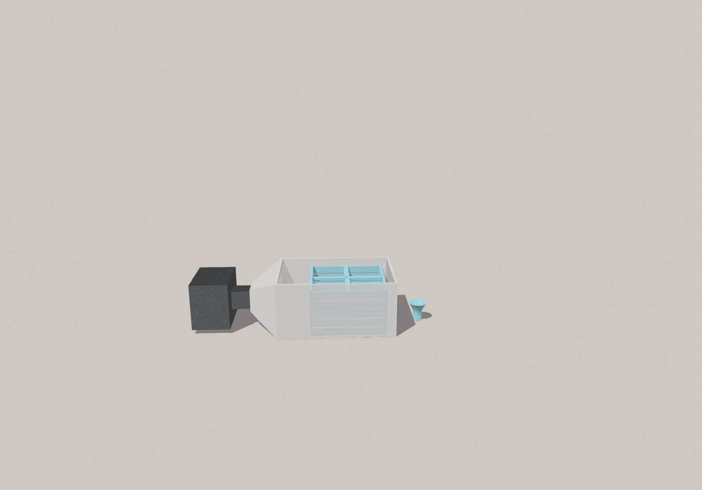
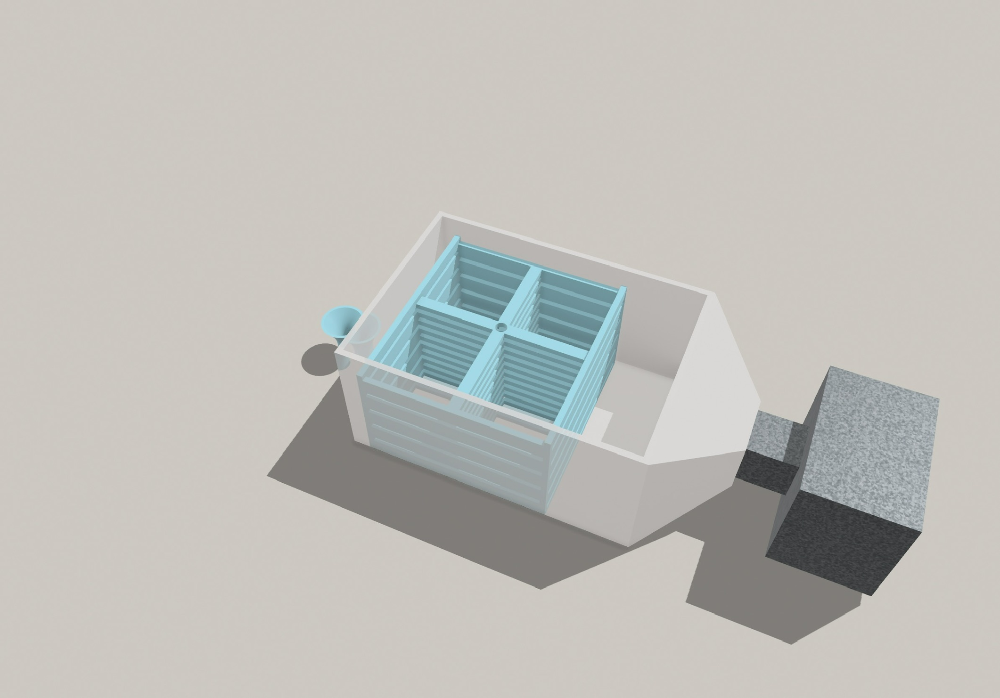
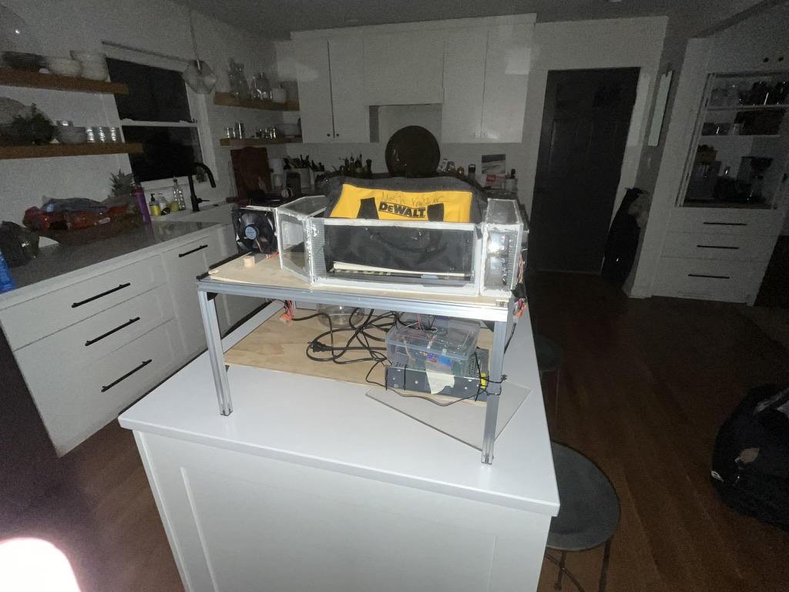

Project
Pulling water from thin air.
SkyStream is a water harvesting system that uses a compound called MOF303 (Metal-Organic Framework) to pull water directly from the air. Heat it up, and it releases the captured moisture — producing water literally out of thin air.
It's designed for areas with limited water access, and the science behind it is incredible.
This was a collaborative effort with an amazing team:
SkyStream won multiple awards and competitions across Georgia.


